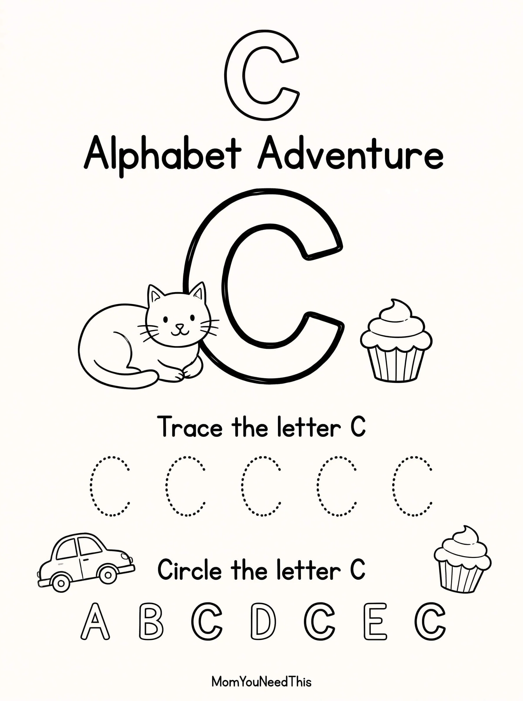
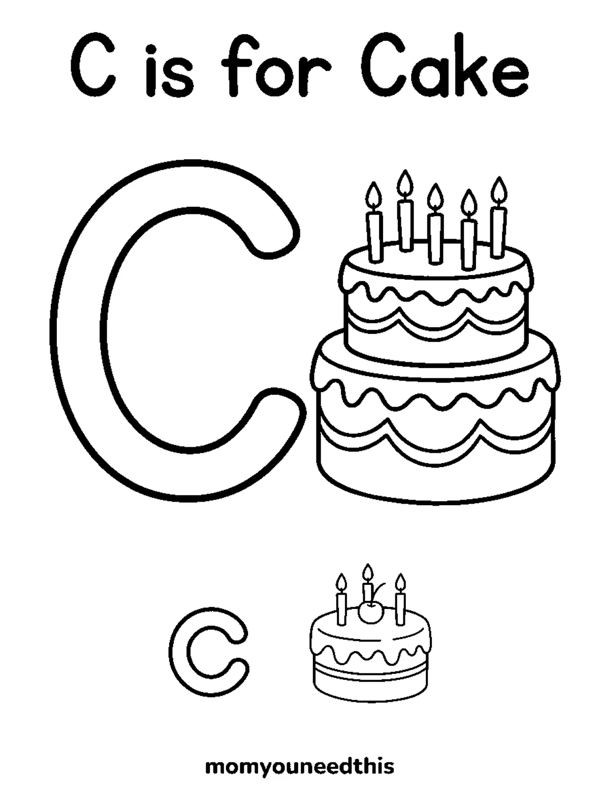
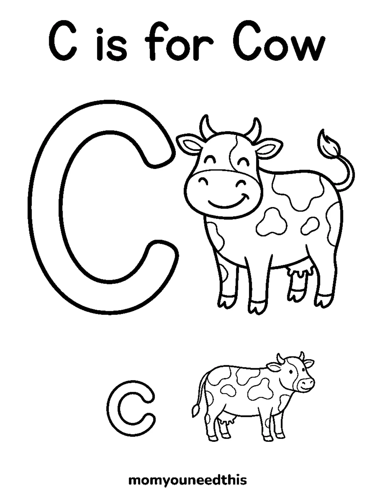

Free Letter C Coloring Pages C is for Cat 🐱
These free printable letter c coloring pages give toddlers and preschoolers a fun, no-prep way to meet the letter that starts cat, car and cake. A big, bold C — one open curve — is paired with a friendly cat, so children color the letter's shape while they hear its coughing sound. Just download, print, and let them color.
Quick Answer
C is for cat on these letter c coloring pages for preschoolers: toddlers color a big, bold letter C — one open curve — beside a friendly cat. While they color, they hear the letter's coughing sound and learn to spot its shape anywhere. One free PDF — download, print and color, no signup.
At a Glance
- Ages: Toddlers and preschoolers
- Activity: Coloring a big, bold letter C with a friendly cat
- Skills: Letter C recognition and coloring
- Format: Printable coloring page (PDF)
- Cost: Free, no signup
🔤 All About The Letter C
C is for cat — the picture on this page — and the letter itself is the friendliest shape in the alphabet to color: one big open curve. Small c is the exact same curve drawn smaller, so this page teaches both cases at once.
The hard c sound is a little cough at the back of the throat: /k/. It is a quick burst — c-c-cat. More hard-c words to chat about over the crayons: car, cake, cow, cup and cookie — and c hides inside music and picnic, too. (C has a soft second sound in words like city, but every word on this page is the hard one.)
When the page is done, the learning does not have to stop. Hunt for the letter c together in a storybook and cough its sound each time one turns up — check each candidate for the open gap that makes it a c and not an o.
🔤 How To Use This Printable
- Download and print the coloring page on letter-size paper — print a few extras so there is no fighting over favorites, and so a second round is ready when the first C is finished.
- Set out crayons, markers, or colored pencils and let your child choose their colors. While the big C fills in, trace its open curve with a finger — the gap on the right is what makes it a C and not an O.
- Color together or side by side, chatting about the picture as it comes to life: a cat begins with the same cough as car and cake. Cough the sound each time the cat gets a new patch of color.
- Show off the masterpiece on the fridge or in a learning binder to celebrate the effort — a C on display keeps teaching every time your child walks past it.

🎨 Download Your Letter C Coloring Page
A coloring activity built around the letter C: color the big letter and its cat, say c-c-cat together, and start hearing the little cough that begins cow, cup and cookie too.
⬇️ Download Free Coloring Page 🖨️ Print(opens in new tab)🎁 Free printable for toddlers & preschoolers

🎨 Download Your C is for Cake Coloring Page
A big, bold letter C with a birthday cake to color — a sweet way to practice the letter C sound while encouraging creativity and early alphabet skills.
⬇️ Download Free Coloring Page 🖨️ Print(opens in new tab)🎁 Free printable for toddlers & preschoolers

🎨 Download Your C is for Cow Coloring Page
A big, bold letter C with a friendly cow to color — a fun way to practice the letter C sound while encouraging creativity and early alphabet skills.
⬇️ Download Free Coloring Page 🖨️ Print(opens in new tab)🎁 Free printable for toddlers & preschoolers
What Your Child Practices
📚 Continue The Alphabet Adventure
Discover more free alphabet coloring pages and activities for your little learner.
⭐ Explore All LettersMore Free Toddler Resources
Discover potty training tools, learning activities, coloring pages, and more free resources to make learning fun.
🎁 View Free Resources❓ Letter C Coloring Pages FAQ
Is this letter c coloring pages printable really free?
Yes — this letter c coloring page is 100% free to download and print at home. No signup and no payment needed. Just tap the download button and print as many copies as you like — Cs reward repetition.
What ages is this printable best for?
It is made for toddlers and preschoolers. Little ones can enjoy it with a grown-up’s help, while older preschoolers can work on it more independently.
What should we color with?
Crayons, washable markers, or colored pencils all work great. For young toddlers, chunky crayons are the easiest to grip — and for this page, try coloring the letter's curve in a rainbow of segments to make the C shape stand out.
🔗 More Free Printables You’ll Love
- 🎨 Free Letter B Coloring PagesFree printable letter b coloring pages for little learners.
- 🔊 Free Lowercase Letter C Sound PracticeFree printable lowercase letter c sound practice for little learners.
- ✏️ Free Letter C Formation PracticeFree printable letter c formation practice for little learners.
- 🖼️ Free Letter C Picture SortFree printable letter c picture sort for little learners.